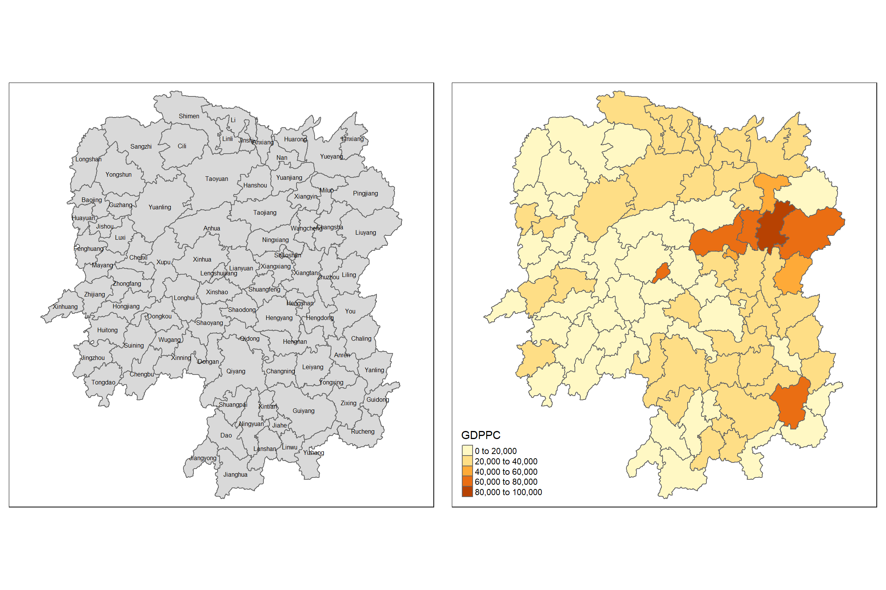
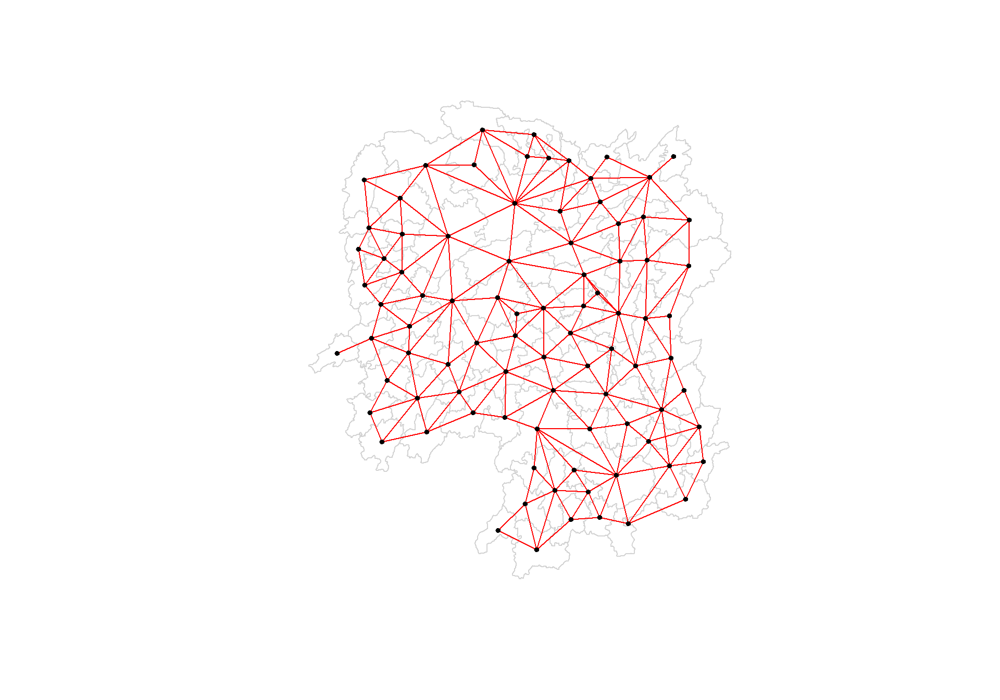
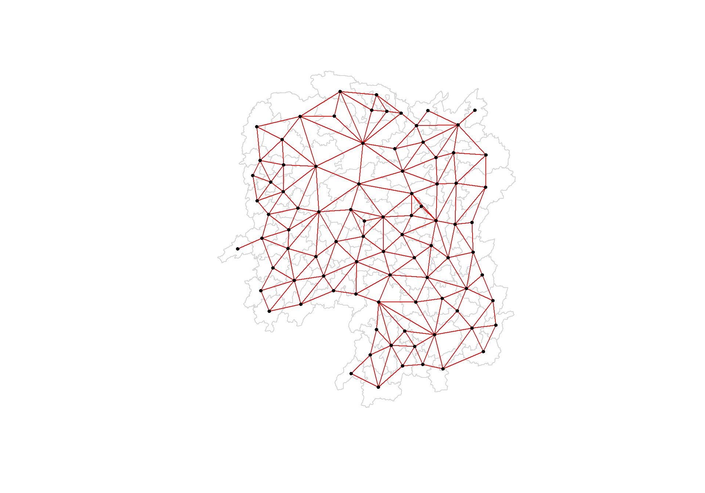
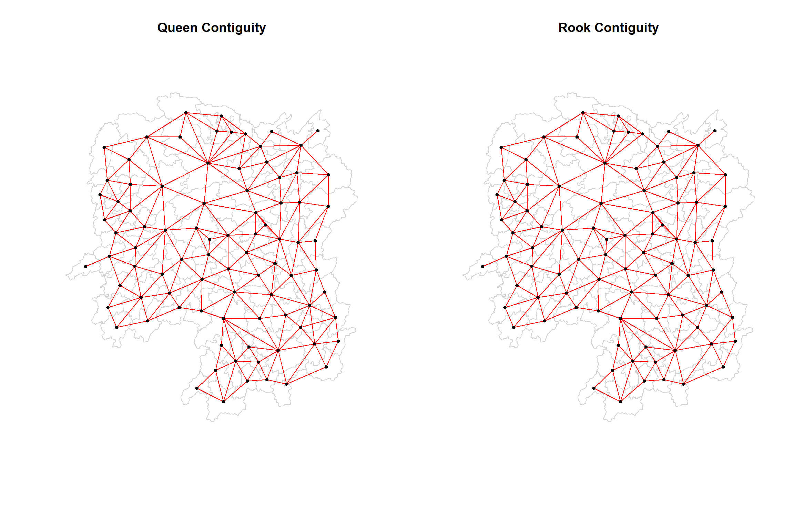
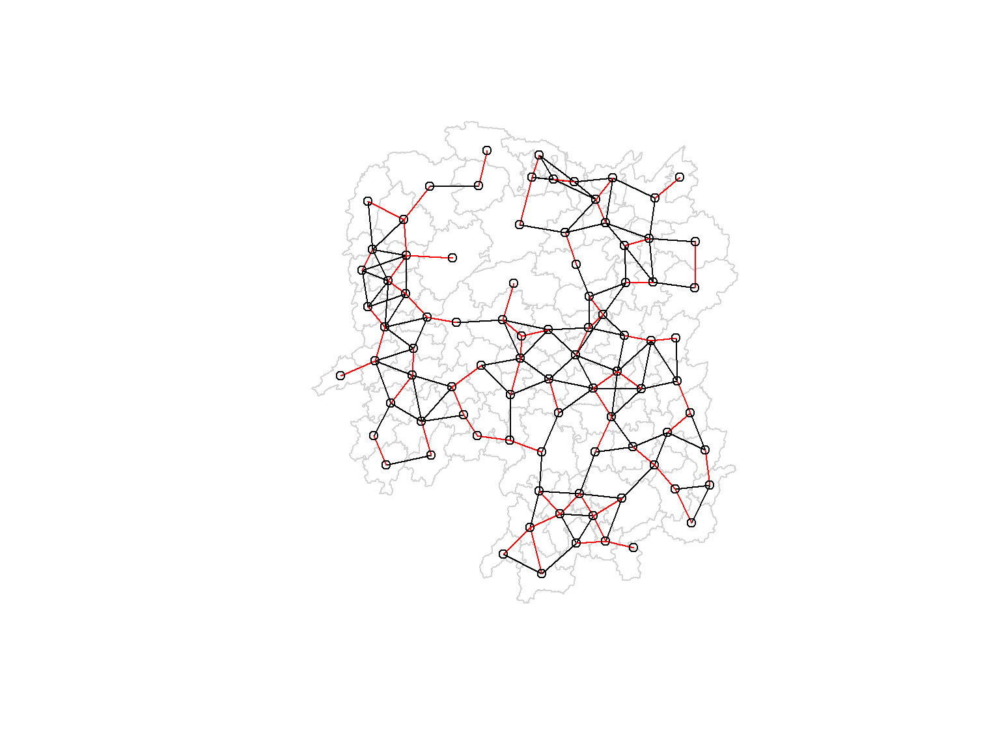
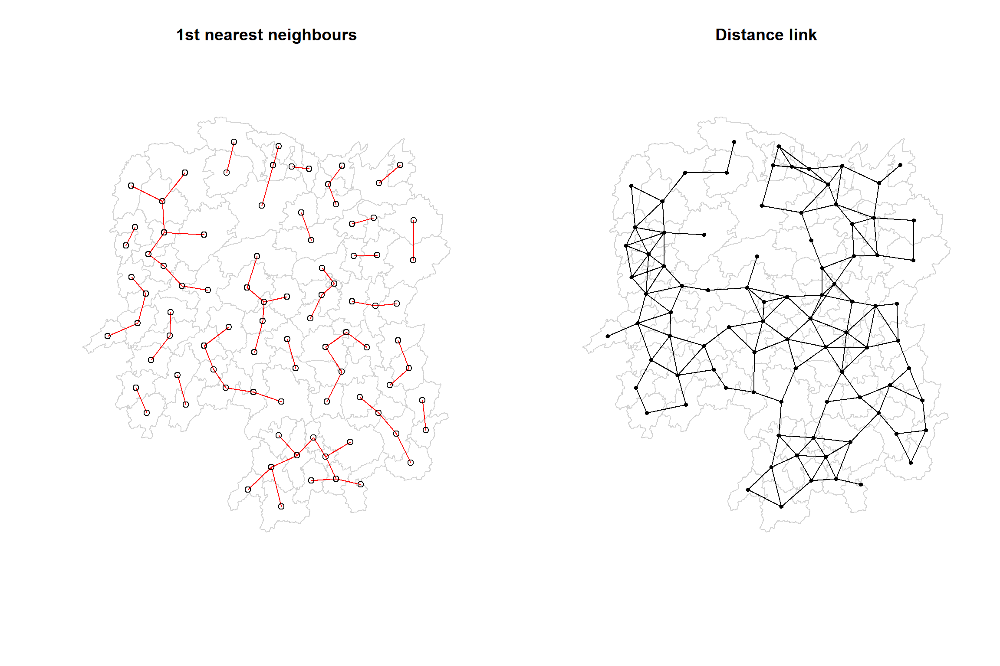

pacman::p_load(spdep, sf, tmap, tidyverse, knitr)Hands-on Exercise 4: Spatial Weights and Applications
5 Spatial Weights and Applications
5.1 Overview
In this hands-on exercise, it will run through the process of computing spatial weights using R. By the end to this hands-on exercise, one should be able to:
- import geospatial data using appropriate function(s) of sf package,
- import csv file using appropriate function of readr package,
- perform relational join using appropriate join function of dplyr package,
- compute spatial weights using appropriate functions of spdep package, and
- calculate spatially lagged variables using appropriate functions of spdep package.
5.2 The Study Area and Data
Two data sets will be used in this hands-on exercise, they are:
Hunan county boundary layer. This is a geospatial data set in ESRI shapefile format.Hunan_2012.csv; This csv file contains selected Hunan’s local development indicators in 2012.
5.2.1 Getting Started
Before getting started, ensure that spdep, sf, tmap, tidyverse and knitrpackages of R are currently installed in R.
5.3 Getting the Data into the R environment
In this section, the geospatial data and its associated attribute table will be brought in R environment. The geospatial data is in ESRI shapefile format and the attribute table is in csv format.
5.3.1 Importing shapefile in R environment
The code chunk below uses st_read() of sf package to import Hunan shapefile into R. The imported shapefile will be a simple feature Object of sf.
hunan <- st_read(dsn = "data/geospatial",
layer = "Hunan")Reading layer `Hunan' from data source
`C:\zjho008\ISSS626-GAA\Hands-on_Ex\Hands-on_Ex04\data\geospatial'
using driver `ESRI Shapefile'
Simple feature collection with 88 features and 7 fields
Geometry type: POLYGON
Dimension: XY
Bounding box: xmin: 108.7831 ymin: 24.6342 xmax: 114.2544 ymax: 30.12812
Geodetic CRS: WGS 845.3.2 Importing csv file into R environment
Next, Hunan_2012.csv will be imported into R by using read_csv() of readr package. The output is a R dataframe class.
hunan2012 <- read_csv("data/aspatial/Hunan_2012.csv")Rows: 88 Columns: 29
── Column specification ────────────────────────────────────────────────────────
Delimiter: ","
chr (2): County, City
dbl (27): avg_wage, deposite, FAI, Gov_Rev, Gov_Exp, GDP, GDPPC, GIO, Loan, ...
ℹ Use `spec()` to retrieve the full column specification for this data.
ℹ Specify the column types or set `show_col_types = FALSE` to quiet this message.5.3.3 Performing relational join
The code chunk below will be used to update the attribute table of hunan’s SpatialPolygonsDataFrame with the attribute fields of hunan2012 dataframe. This is performed by using left_join() of dplyr package.
The select() function is used to select variables that are objectively used for the spatial analysis.
hunan <- left_join(hunan, hunan2012) %>%
select(1:4, 7, 15)Joining with `by = join_by(County)`5.4 Visualising Regional Development Indicator
Now, a basemap and a choropleth map will be prepared showing the distribution of GDPPC 2012 by using qtm() of tmap package.
basemap <- tm_shape(hunan) +
tm_polygons() +
tm_text("NAME_3", size = 0.5)
gdppc <- qtm(hunan, "GDPPC")
tmap_arrange(basemap, gdppc, asp = 1, ncol = 2)
Note: Gross Domestic Product per Capita (GDPPC)
5.5 Computing Contiguity Spatial Weights
In this section, we will learn how to use poly2nb() of spdep package to compute contiguity weight matrices for the study area.
This function builds a neighbours list based on regions with contiguous boundaries. From the documentation, we learn that we can pass a “queen” argument that takes TRUE or FALSE as options. If this argument is not specified the argument’s default is set to TRUE, that is, if we don’t specify queen = FALSE this function will return a list of first order neighbours using the Queen criteria.
5.5.1 Computing (QUEEN) contiguity based neighbours
The code chunk below is used to compute Queen contiguity weight matrix.
wm_q <- poly2nb(hunan, queen = TRUE)
summary(wm_q)Neighbour list object:
Number of regions: 88
Number of nonzero links: 448
Percentage nonzero weights: 5.785124
Average number of links: 5.090909
Link number distribution:
1 2 3 4 5 6 7 8 9 11
2 2 12 16 24 14 11 4 2 1
2 least connected regions:
30 65 with 1 link
1 most connected region:
85 with 11 linksThe summary report above shows that there are 88 area units (regions) in Hunan. The most connected area unit has 11 neighbours. There are two area units with only one neighbour.
For each polygon in the polygon object, wm_q lists all neighbouring polygons. For example, to see the neighbours for the first polygon in the object, type:
wm_q[[1]][1] 2 3 4 57 85Polygon 1 has 5 neighbours. The numbers represent the polygon IDs as stored in hunan SpatialPolygonsDataFrame class.
We can retrieve the county name of Polygon ID=1 by using the code chunk below:
hunan$County[1][1] "Anxiang"The output reveals that Polygon ID=1 is Anxiang county.
To reveal the county names of the five neighbouring polygons, the code chunk will be used:
hunan$NAME_3[c(2,3,4,57,85)][1] "Hanshou" "Jinshi" "Li" "Nan" "Taoyuan"We can retrieve the GDPPC of these five counties by using the code chunk below.
nb1 <- wm_q[[1]]
nb1 <- hunan$GDPPC[nb1]
nb1[1] 20981 34592 24473 21311 22879The printed output above shows that the GDPPC of the five nearest neighbours based on Queen’s method are 20981, 34592, 24473, 21311 and 22879 respectively.
We can display the complete weight matrix by using str().
str(wm_q)List of 88
$ : int [1:5] 2 3 4 57 85
$ : int [1:5] 1 57 58 78 85
$ : int [1:4] 1 4 5 85
$ : int [1:4] 1 3 5 6
$ : int [1:4] 3 4 6 85
$ : int [1:5] 4 5 69 75 85
$ : int [1:4] 67 71 74 84
$ : int [1:7] 9 46 47 56 78 80 86
$ : int [1:6] 8 66 68 78 84 86
$ : int [1:8] 16 17 19 20 22 70 72 73
$ : int [1:3] 14 17 72
$ : int [1:5] 13 60 61 63 83
$ : int [1:4] 12 15 60 83
$ : int [1:3] 11 15 17
$ : int [1:4] 13 14 17 83
$ : int [1:5] 10 17 22 72 83
$ : int [1:7] 10 11 14 15 16 72 83
$ : int [1:5] 20 22 23 77 83
$ : int [1:6] 10 20 21 73 74 86
$ : int [1:7] 10 18 19 21 22 23 82
$ : int [1:5] 19 20 35 82 86
$ : int [1:5] 10 16 18 20 83
$ : int [1:7] 18 20 38 41 77 79 82
$ : int [1:5] 25 28 31 32 54
$ : int [1:5] 24 28 31 33 81
$ : int [1:4] 27 33 42 81
$ : int [1:3] 26 29 42
$ : int [1:5] 24 25 33 49 54
$ : int [1:3] 27 37 42
$ : int 33
$ : int [1:8] 24 25 32 36 39 40 56 81
$ : int [1:8] 24 31 50 54 55 56 75 85
$ : int [1:5] 25 26 28 30 81
$ : int [1:3] 36 45 80
$ : int [1:6] 21 41 47 80 82 86
$ : int [1:6] 31 34 40 45 56 80
$ : int [1:4] 29 42 43 44
$ : int [1:4] 23 44 77 79
$ : int [1:5] 31 40 42 43 81
$ : int [1:6] 31 36 39 43 45 79
$ : int [1:6] 23 35 45 79 80 82
$ : int [1:7] 26 27 29 37 39 43 81
$ : int [1:6] 37 39 40 42 44 79
$ : int [1:4] 37 38 43 79
$ : int [1:6] 34 36 40 41 79 80
$ : int [1:3] 8 47 86
$ : int [1:5] 8 35 46 80 86
$ : int [1:5] 50 51 52 53 55
$ : int [1:4] 28 51 52 54
$ : int [1:5] 32 48 52 54 55
$ : int [1:3] 48 49 52
$ : int [1:5] 48 49 50 51 54
$ : int [1:3] 48 55 75
$ : int [1:6] 24 28 32 49 50 52
$ : int [1:5] 32 48 50 53 75
$ : int [1:7] 8 31 32 36 78 80 85
$ : int [1:6] 1 2 58 64 76 85
$ : int [1:5] 2 57 68 76 78
$ : int [1:4] 60 61 87 88
$ : int [1:4] 12 13 59 61
$ : int [1:7] 12 59 60 62 63 77 87
$ : int [1:3] 61 77 87
$ : int [1:4] 12 61 77 83
$ : int [1:2] 57 76
$ : int 76
$ : int [1:5] 9 67 68 76 84
$ : int [1:4] 7 66 76 84
$ : int [1:5] 9 58 66 76 78
$ : int [1:3] 6 75 85
$ : int [1:3] 10 72 73
$ : int [1:3] 7 73 74
$ : int [1:5] 10 11 16 17 70
$ : int [1:5] 10 19 70 71 74
$ : int [1:6] 7 19 71 73 84 86
$ : int [1:6] 6 32 53 55 69 85
$ : int [1:7] 57 58 64 65 66 67 68
$ : int [1:7] 18 23 38 61 62 63 83
$ : int [1:7] 2 8 9 56 58 68 85
$ : int [1:7] 23 38 40 41 43 44 45
$ : int [1:8] 8 34 35 36 41 45 47 56
$ : int [1:6] 25 26 31 33 39 42
$ : int [1:5] 20 21 23 35 41
$ : int [1:9] 12 13 15 16 17 18 22 63 77
$ : int [1:6] 7 9 66 67 74 86
$ : int [1:11] 1 2 3 5 6 32 56 57 69 75 ...
$ : int [1:9] 8 9 19 21 35 46 47 74 84
$ : int [1:4] 59 61 62 88
$ : int [1:2] 59 87
- attr(*, "class")= chr "nb"
- attr(*, "region.id")= chr [1:88] "1" "2" "3" "4" ...
- attr(*, "call")= language poly2nb(pl = hunan, queen = TRUE)
- attr(*, "type")= chr "queen"
- attr(*, "sym")= logi TRUE
Warning
Be warned: The output might cut across several pages. Do consider saving the trees if you are going to print out the report.
5.5.1.1 DIY
wm_q[[30]][1] 33wm_q[[65]][1] 76wm_q[[85]] [1] 1 2 3 5 6 32 56 57 69 75 78hunan$County[85][1] "Taoyuan"To reveal the county names of the eleven neighbouring polygons, the code chunk will be used:
hunan$NAME_3[c(1,2,3,5,6,32,56,57,69,75,78)] [1] "Anxiang" "Hanshou" "Jinshi" "Linli" "Shimen" "Yuanling"
[7] "Anhua" "Nan" "Cili" "Sangzhi" "Taojiang"Revealing the GDPPC of there eleven counties by using the code chunk below.
nb1 <- wm_q[[85]]
nb1 <- hunan$GDPPC[nb1]
nb1 [1] 23667 20981 34592 25554 27137 24194 14567 21311 18714 14624 195095.5.2 Creating (ROOK) contiguity based neighbours
The code chunk below is used to compute Rook contiguity weight matrix.
wm_r <- poly2nb(hunan, queen = FALSE)
summary(wm_r)Neighbour list object:
Number of regions: 88
Number of nonzero links: 440
Percentage nonzero weights: 5.681818
Average number of links: 5
Link number distribution:
1 2 3 4 5 6 7 8 9 10
2 2 12 20 21 14 11 3 2 1
2 least connected regions:
30 65 with 1 link
1 most connected region:
85 with 10 linksThe summary report above shows that there are 88 area units in Hunan. The most connected area unit has 10 neighbours. There are two area units with only one neighbours.
5.5.3 Visualising contiguity weights
A connectivity graph takes a point and displays a line to each neighbouring point. We are working with polygons at the moment, so we will need to get points in order to make our connectivity graphs. The most typically used method for this will be polygon centroids. We will calculate these in the sf package before moving onto the graphs. Getting Latitude and Longitude of Polygon Centroids
We will need points to associate with each polygon before we can make our connectivity graph. It will be a little more complicated than just running st_centroid on the sf object: us.bound. We need the coordinates in a separate data frame for this to work. To do this we will use a mapping function. The mapping function applies a given function to each element of a vector and returns a vector of the same length. Our input vector will be the geometry column of us.bound. Our function will be st_centroid. We will be using map_dbl variation of map from the purrr package. For more documentation, check out map documentation
To get our longitude values we map the st_centroid function over the geometry column of us.bound and access the longitude value through double bracket notation [[]] and 1. This allows us to get only the longitude, which is the first value in each centroid.
longitude <- map_dbl(hunan$geometry, ~st_centroid(.x)[[1]])We can do the same for latitude with one key difference. We access the second value per each centroid with [[2]].
latitude <- map_dbl(hunan$geometry, ~st_centroid(.x)[[2]])Now that longitude and latitude is obtained, we use cbind to put longitude and latitude into the same object.
coords <- cbind(longitude, latitude)Upon running the code chunk, we can check the first few observations to see if things are formatted correctly.
head(coords) longitude latitude
[1,] 112.1531 29.44362
[2,] 112.0372 28.86489
[3,] 111.8917 29.47107
[4,] 111.7031 29.74499
[5,] 111.6138 29.49258
[6,] 111.0341 29.798635.5.3.1 Plotting Queen contiguity based neighbours map
plot(hunan$geometry, border = "lightgrey")
plot(wm_q, coords, pch = 19, cex = 0.6, add = TRUE, col = "red")
5.5.3.2 Plotting Rook contiguity based neighbours map
plot(hunan$geometry, border = "lightgrey")
plot(wm_r, coords, pch = 19, cex = 0.6, add = TRUE, col = "red")
5.5.3.3 Plotting both Queen and Rook contiguity based neighbours maps
par(mfrow = c(1,2))
plot(hunan$geometry, border = "lightgrey", main = "Queen Contiguity")
plot(wm_q, coords, pch = 19, cex = 0.6, add = TRUE, col = "red")
plot(hunan$geometry, border = "lightgrey", main = "Rook Contiguity")
plot(wm_r, coords, pch = 19, cex = 0.6, add = TRUE, col = "red")
5.6 Computing distance based neighbours
In this section, we will learn how to derive distance-based weight matrices by using dnearneigh() of spdep package.
The function identifies neighbours of region points by Euclidean distance with a distance band with lower d1= and upper d2= bounds controlled by the bounds = argument. If un-projected coordinates are used and either specified in the coordinates object x or with x as a two column matrix and = TRUE, great circle distances in km will be calculated assuming the WGS84 reference ellipsoid.
5.6.1 Determine the cut-off distance
Firstly, we need to determine the upper limit for distance band by using the steps below:
- Return a matrix with the indices of points belonging to the set of the k nearest neighbours of each other by using knearneigh() of spdep.
- Convert the knn object returned by knearneigh() into a neighbours list of class nb with a list of integer vectors containing neighbour region number ids by using knn2nb().
- Return the length of neighbour relationship edges by using nbdists() of spdep. The function returns in the units of the coordinates if the coordinates are projected, in km otherwise.
- Remove the list structure of the returned object by using unlist().
#coords <- coordinates(hunan)
k1 <- knn2nb(knearneigh(coords))
k1dists <- unlist(nbdists(k1, coords, longlat = TRUE))
summary(k1dists) Min. 1st Qu. Median Mean 3rd Qu. Max.
24.79 32.57 38.01 39.07 44.52 61.79 The summary report shows that the largest first nearest neighbour distance is 61.79 km, so using this as the upper threshold gives certainty that all units will have at least one neighbour.
5.6.2 Computing fixed distance weight matrix
Now, we will compute the distance weight matrix by using dnearneigh() as shown in the code chunk below.
wm_d62 <- dnearneigh(coords, 0, 62, longlat = TRUE)
wm_d62Neighbour list object:
Number of regions: 88
Number of nonzero links: 324
Percentage nonzero weights: 4.183884
Average number of links: 3.681818 Quiz: What is the meaning of “Average number of links: 3.681818” shown above?
Interpretation: An average of 3.681818 means that, on average, each point has about 3.68 neighbours within the specified distance band (0 to 62 km in this case). This gives a sense of the overall connectivity in the spatial network. A higher average number of links suggests that points are more densely connected, while a lower number suggests sparser connections.
Next, we will use str() to display the content of wm_d62 weight matrix.
str(wm_d62)List of 88
$ : int [1:5] 3 4 5 57 64
$ : int [1:4] 57 58 78 85
$ : int [1:4] 1 4 5 57
$ : int [1:3] 1 3 5
$ : int [1:4] 1 3 4 85
$ : int 69
$ : int [1:2] 67 84
$ : int [1:4] 9 46 47 78
$ : int [1:4] 8 46 68 84
$ : int [1:4] 16 22 70 72
$ : int [1:3] 14 17 72
$ : int [1:5] 13 60 61 63 83
$ : int [1:4] 12 15 60 83
$ : int [1:2] 11 17
$ : int 13
$ : int [1:4] 10 17 22 83
$ : int [1:3] 11 14 16
$ : int [1:3] 20 22 63
$ : int [1:5] 20 21 73 74 82
$ : int [1:5] 18 19 21 22 82
$ : int [1:6] 19 20 35 74 82 86
$ : int [1:4] 10 16 18 20
$ : int [1:3] 41 77 82
$ : int [1:4] 25 28 31 54
$ : int [1:4] 24 28 33 81
$ : int [1:4] 27 33 42 81
$ : int [1:2] 26 29
$ : int [1:6] 24 25 33 49 52 54
$ : int [1:2] 27 37
$ : int 33
$ : int [1:2] 24 36
$ : int 50
$ : int [1:5] 25 26 28 30 81
$ : int [1:3] 36 45 80
$ : int [1:6] 21 41 46 47 80 82
$ : int [1:5] 31 34 45 56 80
$ : int [1:2] 29 42
$ : int [1:3] 44 77 79
$ : int [1:4] 40 42 43 81
$ : int [1:3] 39 45 79
$ : int [1:5] 23 35 45 79 82
$ : int [1:5] 26 37 39 43 81
$ : int [1:3] 39 42 44
$ : int [1:2] 38 43
$ : int [1:6] 34 36 40 41 79 80
$ : int [1:5] 8 9 35 47 86
$ : int [1:5] 8 35 46 80 86
$ : int [1:5] 50 51 52 53 55
$ : int [1:4] 28 51 52 54
$ : int [1:6] 32 48 51 52 54 55
$ : int [1:4] 48 49 50 52
$ : int [1:6] 28 48 49 50 51 54
$ : int [1:2] 48 55
$ : int [1:5] 24 28 49 50 52
$ : int [1:4] 48 50 53 75
$ : int 36
$ : int [1:5] 1 2 3 58 64
$ : int [1:5] 2 57 64 66 68
$ : int [1:3] 60 87 88
$ : int [1:4] 12 13 59 61
$ : int [1:5] 12 60 62 63 87
$ : int [1:4] 61 63 77 87
$ : int [1:5] 12 18 61 62 83
$ : int [1:4] 1 57 58 76
$ : int 76
$ : int [1:5] 58 67 68 76 84
$ : int [1:2] 7 66
$ : int [1:4] 9 58 66 84
$ : int [1:2] 6 75
$ : int [1:3] 10 72 73
$ : int [1:2] 73 74
$ : int [1:3] 10 11 70
$ : int [1:4] 19 70 71 74
$ : int [1:5] 19 21 71 73 86
$ : int [1:2] 55 69
$ : int [1:3] 64 65 66
$ : int [1:3] 23 38 62
$ : int [1:2] 2 8
$ : int [1:4] 38 40 41 45
$ : int [1:5] 34 35 36 45 47
$ : int [1:5] 25 26 33 39 42
$ : int [1:6] 19 20 21 23 35 41
$ : int [1:4] 12 13 16 63
$ : int [1:4] 7 9 66 68
$ : int [1:2] 2 5
$ : int [1:4] 21 46 47 74
$ : int [1:4] 59 61 62 88
$ : int [1:2] 59 87
- attr(*, "class")= chr "nb"
- attr(*, "region.id")= chr [1:88] "1" "2" "3" "4" ...
- attr(*, "call")= language dnearneigh(x = coords, d1 = 0, d2 = 62, longlat = TRUE)
- attr(*, "dnn")= num [1:2] 0 62
- attr(*, "bounds")= chr [1:2] "GE" "LE"
- attr(*, "nbtype")= chr "distance"
- attr(*, "sym")= logi TRUEAnother way to display the structure of the weight matrix is to combine table() and card() of spdep.
table(hunan$County, card(wm_d62))
1 2 3 4 5 6
Anhua 1 0 0 0 0 0
Anren 0 0 0 1 0 0
Anxiang 0 0 0 0 1 0
Baojing 0 0 0 0 1 0
Chaling 0 0 1 0 0 0
Changning 0 0 1 0 0 0
Changsha 0 0 0 1 0 0
Chengbu 0 1 0 0 0 0
Chenxi 0 0 0 1 0 0
Cili 0 1 0 0 0 0
Dao 0 0 0 1 0 0
Dongan 0 0 1 0 0 0
Dongkou 0 0 0 1 0 0
Fenghuang 0 0 0 1 0 0
Guidong 0 0 1 0 0 0
Guiyang 0 0 0 1 0 0
Guzhang 0 0 0 0 0 1
Hanshou 0 0 0 1 0 0
Hengdong 0 0 0 0 1 0
Hengnan 0 0 0 0 1 0
Hengshan 0 0 0 0 0 1
Hengyang 0 0 0 0 0 1
Hongjiang 0 0 0 0 1 0
Huarong 0 0 0 1 0 0
Huayuan 0 0 0 1 0 0
Huitong 0 0 0 1 0 0
Jiahe 0 0 0 0 1 0
Jianghua 0 0 1 0 0 0
Jiangyong 0 1 0 0 0 0
Jingzhou 0 1 0 0 0 0
Jinshi 0 0 0 1 0 0
Jishou 0 0 0 0 0 1
Lanshan 0 0 0 1 0 0
Leiyang 0 0 0 1 0 0
Lengshuijiang 0 0 1 0 0 0
Li 0 0 1 0 0 0
Lianyuan 0 0 0 0 1 0
Liling 0 1 0 0 0 0
Linli 0 0 0 1 0 0
Linwu 0 0 0 1 0 0
Linxiang 1 0 0 0 0 0
Liuyang 0 1 0 0 0 0
Longhui 0 0 1 0 0 0
Longshan 0 1 0 0 0 0
Luxi 0 0 0 0 1 0
Mayang 0 0 0 0 0 1
Miluo 0 0 0 0 1 0
Nan 0 0 0 0 1 0
Ningxiang 0 0 0 1 0 0
Ningyuan 0 0 0 0 1 0
Pingjiang 0 1 0 0 0 0
Qidong 0 0 1 0 0 0
Qiyang 0 0 1 0 0 0
Rucheng 0 1 0 0 0 0
Sangzhi 0 1 0 0 0 0
Shaodong 0 0 0 0 1 0
Shaoshan 0 0 0 0 1 0
Shaoyang 0 0 0 1 0 0
Shimen 1 0 0 0 0 0
Shuangfeng 0 0 0 0 0 1
Shuangpai 0 0 0 1 0 0
Suining 0 0 0 0 1 0
Taojiang 0 1 0 0 0 0
Taoyuan 0 1 0 0 0 0
Tongdao 0 1 0 0 0 0
Wangcheng 0 0 0 1 0 0
Wugang 0 0 1 0 0 0
Xiangtan 0 0 0 1 0 0
Xiangxiang 0 0 0 0 1 0
Xiangyin 0 0 0 1 0 0
Xinhua 0 0 0 0 1 0
Xinhuang 1 0 0 0 0 0
Xinning 0 1 0 0 0 0
Xinshao 0 0 0 0 0 1
Xintian 0 0 0 0 1 0
Xupu 0 1 0 0 0 0
Yanling 0 0 1 0 0 0
Yizhang 1 0 0 0 0 0
Yongshun 0 0 0 1 0 0
Yongxing 0 0 0 1 0 0
You 0 0 0 1 0 0
Yuanjiang 0 0 0 0 1 0
Yuanling 1 0 0 0 0 0
Yueyang 0 0 1 0 0 0
Zhijiang 0 0 0 0 1 0
Zhongfang 0 0 0 1 0 0
Zhuzhou 0 0 0 0 1 0
Zixing 0 0 1 0 0 0n_comp <- n.comp.nb(wm_d62)
n_comp$nc[1] 1table(n_comp$comp.id)
1
88 5.6.2.1 Plotting fixed distance weight matrix
Next, we will plot the distance weight matrix by using the code chunk below.
plot(hunan$geometry, border = "lightgrey")
plot(wm_d62, coords, add = TRUE)
plot(k1, coords, add = TRUE, col = "red", length = 0.08)
The red lines show the links of 1st nearest neighbours and the black lines show the links of neighbours within the cut-off distance of 62km.
Alternatively, we can plot both of them next to each other by using the code chunk below.
par(mfrow = c(1,2))
plot(hunan$geometry, border = "lightgrey", main = "1st nearest neighbours")
plot(k1, coords, add = TRUE, col = "red", length = 0.88)
plot(hunan$geometry, border = "lightgrey", main = "Distance link")
plot(wm_d62, coords, add = TRUE, pch = 19, cex = 0.6)